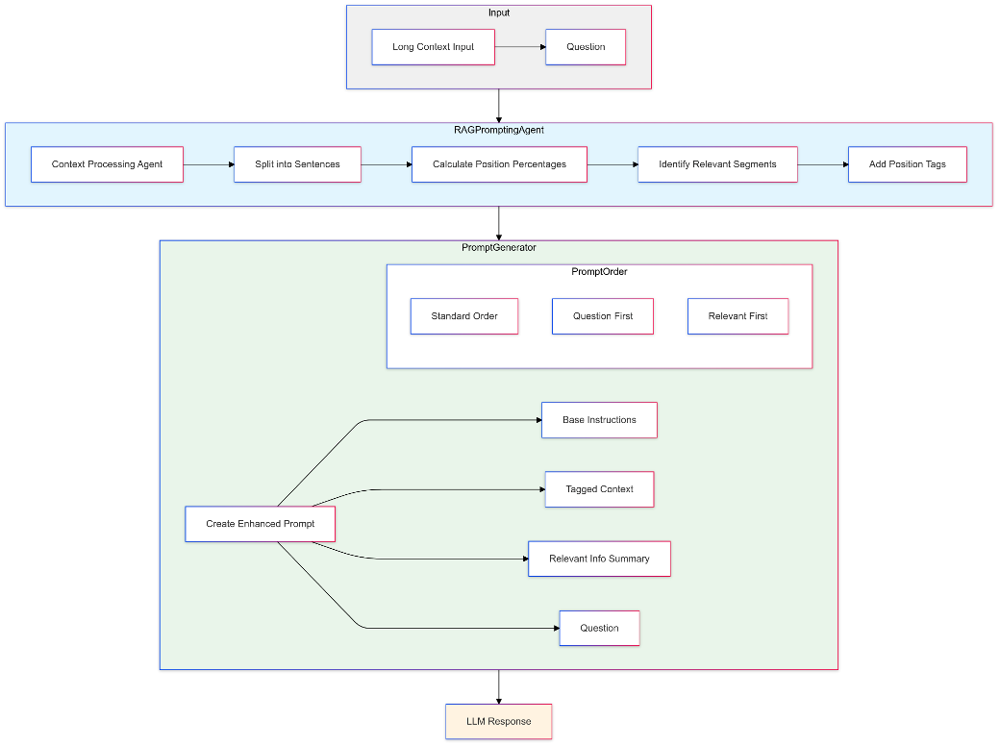

通过提示工程模拟检索增强生成，增强大语言模型的长上下文理解能力
📄 Preprint 2025 | arXiv: 2502.12462
本文提出了一种单次前向传播（single-pass）的方法，让 LLM 同时扮演"检索器"和"推理器"两个角色——通过精心设计的提示词，引导模型在长文本中标记相关片段、提取关键信息、执行多跳推理并生成最终答案，整个过程无需调用任何外部检索系统。方法的四步流水线如下：
图 1：Emulated RAG + CoT 方法的四步流水线架构。模型在单次生成中依次完成标记、提取、推理和回答，无需外部检索器。

📄 论文原图 — Figure 1: Pipeline of Our Proposed Method。展示了从长文本输入到最终答案的四步流程。
Step 1 中模型充当检索器：通过指令引导，在长文本中定位并标记与问题相关的片段，使用 <relevant_section> 标签包围，替代了传统 RAG 中的外部向量检索。支持句子级和段落级两种粒度的标记。
Step 2 对每个标记片段进行局部摘要：提取实体名称、动作类型、数值等关键信息，形成精炼的要点列表。这一步防止了多片段场景下的信息丢失问题。
Step 3 是核心创新——将多个局部摘要按时间/逻辑顺序串联，逐步构建推理链。例如：先确定物品被拿起的地点，再追踪人物移动路径，最终推导物品位置。
Step 4 基于推理链输出最终答案。支持多种格式（地点、数值、yes/no/maybe），通过明确的指令约束输出格式，确保答案简洁且准确。
近两年来，大语言模型的上下文窗口从几千 token 迅速扩展到超过 10 万 token——GPT-4o 支持 128k，Claude 2 支持 200k，Gemini 1.5 甚至号称支持百万级 token。然而，更大的上下文窗口并不意味着模型能更有效地利用其中的信息。这是本文要解决的核心矛盾。
具体来说，现有方法存在三大困境：
图 2：现有方法在长上下文多跳推理中的三大困境。长上下文利用不足、单次 RAG 盲区、纯 CoT 幻觉——三者相互制约。
本文的核心洞察是：RAG 的"检索聚焦"能力和 CoT 的"逐步推理"能力可以统一在单次前向传播中，通过提示工程让模型同时执行检索和推理，既避免了外部检索器的开销，又克服了纯 CoT 的幻觉问题。这就是"Emulating RAG"的核心思想——用提示词模拟 RAG 的检索过程，而不是真的调用外部检索系统。
在深入方法细节之前，我们需要理解论文涉及的关键前置概念。本节不讲解"什么是 Transformer"这类通用基础知识，而是聚焦于论文中出现的特定术语和技术，解释它们是什么、在本文中起什么作用。
什么是 RAG：Retrieval-Augmented Generation，即"检索增强生成"。它是一种让 LLM 在生成答案之前，先从外部知识库中检索相关文档片段，然后将检索结果作为上下文提供给 LLM 的方法。典型的 RAG 流程为：用户提问 → 检索器从语料库中取回 Top-k 片段 → LLM 基于这些片段生成答案。
在本文中的角色：RAG 是本文要"模拟"（emulate）的对象。传统 RAG 依赖外部检索器（如 DRAGON），但单次检索往往无法覆盖多跳推理所需的全部事实片段。本文的核心思路是：不调用外部检索器，而是通过提示词让模型自己在长文本中定位相关片段——这就是"模拟 RAG"的含义。
为什么需要模拟：外部检索器引入额外开销（构建索引、调用 API），且单次检索的 Top-k 结果常常遗漏多跳任务中所需的第二个或第三个关键事实。模拟 RAG 让模型在一次生成中自主完成"检索+推理"，既省去外部依赖，又能更全面地覆盖相关片段。
什么是 CoT：Chain-of-Thought prompting，即"思维链提示"。它通过在提示词中引导模型产出中间推理步骤，而非直接给出答案，从而提升模型在复杂任务上的表现。经典例子：不直接问"答案是什么"，而是要求模型"一步步思考"。
在本文中的角色：CoT 是本文方法的第二步核心——在模型标记相关片段后，引导它按步骤整合多个片段的信息，形成连贯的推理链。例如"Step1: 苹果在花园被拿起 → Step2: Daniel 移动到厨房 → Step3: 因此苹果在厨房"。
CoT 的局限：当关键事实被噪声文本淹没时，纯 CoT 容易产生幻觉——模型会在缺失关键前提的情况下"编造"推理链。本文通过"先标记再推理"的策略缓解这一问题：确保推理所依赖的事实已经被显式标记出来。
什么是 BABILong：一个专用于评估 LLM 长上下文理解能力的 QA 基准。它将经典的 bAbI 问答任务（短文本、简单推理）嵌入到 PG19 小说语料（大量干扰文本）中，创造出从几千到几十万 token 不等的长上下文 QA 任务。核心挑战是：关键信息被海量无关文本包围，模型需要"大海捞针"并完成多步推理。
在本文中的角色：BABILong 是本文唯一的评估基准。论文选取了三个子任务——QA2（双事实定位）、QA7（物品计数）、QA10（不确定知识判断），在不同上下文长度（16k/32k/64k）下测试方法效果。
为什么选 BABILong：它的设计天然测试了"长文本中的多跳推理"能力——恰恰是本文方法要解决的问题。与 NeedleBench（单针检索）不同，BABILong 要求模型找到并组合多个分散的事实片段。
什么是 Prompt Order：指在构建提示词时，各组成部分（指令、长文本、问题、示例标签）的排列顺序。本文测试了三种顺序：标准顺序（指令→文本→问题）、问题优先（问题→指令→文本）、相关片段优先（指令→文本→问题→示例标签）。
为什么这很重要：实验表明，提示词的排列顺序对长上下文任务的性能有显著影响——在不同任务和上下文长度下，最佳顺序各不相同。这是本文的一个重要发现：不仅是"说什么"重要，"先说什么"同样关键。
什么是 DRAGON：一个基于深度学习的文档检索模型，属于"稠密检索器"（Dense Retriever）类别。它将查询和文档分别编码为向量，通过向量相似度进行检索，是 RAG pipeline 中常用的检索 backbone。
在本文中的角色：DRAGON 被用作 Baseline RAG 方法中的外部检索器——从长文本中检索 Top-k 句子，然后交给 LLM 生成答案。实验结果显示，这种单步检索在多跳任务上表现极差（QA2 仅 0.04 准确率），恰恰说明了传统 RAG 的局限。
本节深入解析 Emulated RAG + CoT 方法的四个核心步骤。每个步骤都配有图解和详细说明，帮助理解其内部工作机制。
这是整个方法的起点，也是"模拟检索"的关键步骤。传统 RAG 使用外部检索器（如向量搜索引擎）来找到与问题相关的文档片段；而本文方法通过指令引导，让模型自己在输入的长文本中识别并标记相关内容。
具体做法：在提示词的 [INSTRUCTION] 部分，明确要求模型"找到与问题相关的句子或段落，用 <relevant_section position="..."> 标签包围"。模型在生成输出时，会先产出这些标签化的片段，模拟了检索器返回检索结果的过程。
粒度与格式：标记可以按不同粒度进行——句子级（sentence-level）或段落级（paragraph-level）。还可以要求模型输出 JSON 格式，包含 content（内容）、position（位置百分比）和 reason_why_tagged（标记原因），使标记过程更加结构化和可解释。
为什么有效：具备强指令遵循能力的模型能够理解问题、推断文本中哪些部分与问题相关，并忠实地将它们标记出来。这实质上是让模型的注意力机制在指令的引导下聚焦到关键片段，替代了外部搜索索引的功能。
图 3：Step 1 标记过程图解。模型在问题引导下，从长文本中定位两个相关片段（拿起事件和移动事件），并用标签标记。
标记完相关片段后，下一步是对每个 <relevant_section> 生成精炼的局部摘要。这一步的目的是信息压缩——从可能冗长的原文片段中提取出核心实体、动作和数值，防止在后续推理中丢失关键细节。
具体做法：提示词中增加指令"对每个标记的相关片段，总结其中的实体、动作或数值，以简短的要点列表形式呈现"。例如，"Daniel grabbed the apple in the garden" → 提取出 实体: Daniel, apple、动作: grabbed、地点: garden。
为什么需要：在多跳查询中，相关片段可能分散在文本的不同位置，每个片段只包含部分信息。局部摘要将每个片段压缩为核心要点，为下一步的多跳整合提供"原料"。没有这一步，模型在处理多个长片段时容易遗漏细节。
这是方法的核心创新步骤。模型将各片段的局部摘要按逻辑/时间顺序串联，形成一条完整的推理链（Chain-of-Thought），逐步推导出最终答案。
具体示例：对于"苹果最终在哪里"的问题，推理链为：
为什么是核心创新：传统 RAG 的单次检索无法保证取回所有必要的片段——例如可能只检索到"Daniel 移动到厨房"而遗漏了"苹果在花园被拿起"。本文方法通过"先标记、后推理"的策略，确保模型在推理前已经显式识别了所有相关片段，从而避免了推理链的前提缺失。
与传统多轮 RAG 的区别：多轮 RAG 也尝试解决多跳问题，但需要多次调用检索器和 LLM，增加了系统复杂度和延迟。本文方法在单次生成中完成所有步骤，无需多轮交互。
推理链完成后，模型输出简洁的最终答案。提示词中会附加明确的指令（如"Now provide the final answer in one sentence"），约束输出格式。
输出格式：根据任务类型不同，最终答案可以是：
格式控制的重要性：BABILong 的评估使用精确匹配（exact match），如果模型输出冗长的解释而非简洁答案，可能导致判为错误。因此提示词中的格式约束对最终准确率有直接影响。
本文的核心创新可以归纳为三个方面：单次传播中的检索-推理统一、提示词排列顺序的系统研究、以及"模拟 RAG"这一全新范式的提出。下面逐一深入解析。
传统范式的割裂：在传统架构中，"检索"和"推理"是两个独立阶段——检索器（如 DRAGON）先从语料库中取回片段，然后 LLM 基于这些片段进行推理。这种割裂导致两个问题：（1）检索器和推理器之间的信息断层——检索器不知道推理器需要什么；（2）单次检索无法根据推理需求动态调整。
本文的统一方案：通过精心设计的提示词，让同一个 LLM 在一次生成中先后完成检索（标记相关片段）和推理（CoT 整合）。由于检索和推理由同一个模型完成，模型可以根据问题的需求自主决定标记哪些片段，实现了检索意图和推理需求的隐式对齐。
图 4：传统 RAG Pipeline 与本文 Emulated RAG + CoT 方法的对比。本文方法在同一模型内统一检索和推理，避免了外部检索器的盲区。
本文系统研究了提示词中各组成部分的排列顺序对长上下文推理性能的影响，这是一个之前被忽视但极为重要的因素。
三种排列顺序：
关键发现：
不同的任务和上下文长度下，最佳排列顺序不同——没有"万能顺序"。这一发现对实践有重要指导意义：在实际应用中，应该针对具体任务类型优化提示词排列。
"模拟 RAG"不仅是一个具体方法，更是一种新范式的提出——通过提示工程让 LLM 内化外部工具的功能，从而减少系统复杂度和外部依赖。
范式意义：传统做法是"工具不够就加工具"——检索不够就加检索器，推理不够就加推理模块。本文的思路是"工具不够就提示模型自己做"——通过提示词让模型自己完成检索和推理。这种思路可以推广到其他外部工具的模拟，如模拟代码执行、模拟数据库查询等。
边界与局限：模拟 RAG 并非万能——当需要真正访问外部知识库（模型上下文中不存在的信息）时，模拟方法无法替代真实检索。但当所需信息已经在上下文中时，模拟 RAG 是一种更轻量、更灵活的替代方案。
本节用 SVG 数据流图配合文字说明，详细解析 Emulated RAG + CoT 方法在推理阶段的完整数据流——从输入到输出的每一步变化。
图 5：Emulated RAG + CoT 的完整推理数据流。从提示词构造到最终答案，四步在单次 LLM 生成中完成。每一步的输入都是前一步的输出。
训练数据流说明：本文方法无需训练——它是一种纯提示工程方法，不涉及模型参数更新。方法的核心是提示词的设计，而非模型训练。因此不存在传统意义上的"训练数据流"。评估时直接使用预训练好的 LLM（gpt-4o-mini、llama-3.1-8b-instruct），通过 API 调用进行推理。
本文方法的成败高度依赖于提示词的设计。本节深入分析提示词的构造方式、排列顺序的影响，以及不同设计选择背后的原理。
提示词由四个核心部分组成，每部分承担不同的功能：
[INSTRUCTIONS] 部分定义了模型需要执行的四步操作，是方法的"程序逻辑"。[LONG CONTENT] 是待处理的长文本。[QUESTION] 是用户的问题，引导模型标记和推理的方向。[EXAMPLE TAGS] 是可选的示例，帮助模型理解标记格式。
关键设计原则：指令必须明确、有序、无歧义。模糊的指令（如"找出重要信息"）远不如具体的指令（如"用 <relevant_section> 标签包围与问题相关的句子，并标注位置百分比"）有效。这要求提示词工程师对模型的能力和限制有深入理解。
本文测试了三种排列顺序，每种在不同任务和上下文长度下表现不同：
| 排列顺序 | 结构 | 最佳场景 | 直觉解释 |
|---|---|---|---|
| 标准顺序 | 指令→文本→问题 | 短上下文、简单任务 | 最直觉的排列，模型先知道"怎么做"再"做" |
| 问题优先 | 问题→指令→文本 | 长上下文（64k）、多跳任务 | 模型先知道"找什么"，阅读时带有明确目标 |
| 相关优先 | 指令→文本→问题→示例 | 需要格式引导的任务 | 示例标签帮助模型理解输出格式 |
<relevant_section> 标签的设计有多重考量：
本节详细分析三个 BABILong 任务的实验结果，包括不同方法、模型和上下文长度下的性能对比，以及提示词排列顺序的消融分析。
| 项目 | 设置 |
|---|---|
| 评估基准 | BABILong（bAbI QA + PG19 干扰文本） |
| 任务类型 | QA2（双事实定位）、QA7（计数）、QA10（不确定知识） |
| 上下文长度 | 16k、32k、64k tokens |
| 对比方法 | Baseline（无检索）、Single-Step RAG（DRAGON）、Proposed（Emulated RAG + CoT） |
| 测试模型 | gpt-4o-mini（128k 窗口）、llama-3.1-8b-instruct（32k+ 窗口） |
| 样本数量 | 每个设置 25 个样本 |
| 生成参数 | temperature=0.0, max_tokens=20 |
| 评估指标 | 准确率（精确匹配） |
QA2 要求模型整合两个分散的事实来确定物品的最终位置。这是最典型的多跳推理任务——需要同时找到"拿起事件"和"移动事件"并组合推理。
| 方法 / 模型 | 16k | 32k | 64k |
|---|---|---|---|
| gpt-4o-mini | |||
| Baseline | 0.44 | 0.36 | 0.28 |
| RAG | 0.04 | 0.04 | 0.04 |
| Proposed | 0.44 | 0.16–0.20 | 0.28–0.44 |
| llama-3.1-8b-instruct | |||
| Baseline | 0.24 | 0.44 | 0.40 |
| RAG | 0.04 | 0.00 | 0.08 |
| Proposed | 0.16–0.24 | 0.28–0.32 | 0.24–0.28 |
QA7 要求跟踪某人持有的物品数量，需要逐一记录每次"拿起"和"给予"事件。这测试了模型对多个分散事件的追踪能力。
| 方法 / 模型 | 16k | 32k | 64k |
|---|---|---|---|
| gpt-4o-mini | |||
| Baseline | 0.44 | 0.52 | 0.36 |
| RAG | 0.40 | 0.36 | 0.36 |
| Proposed | 0.56–0.64 | 0.44–0.52 | 0.48–0.52 |
| llama-3.1-8b-instruct | |||
| Baseline | 0.40 | 0.44 | 0.40 |
| RAG | 0.32 | 0.24 | 0.24 |
| Proposed | 0.44–0.52 | 0.44 | 0.44 |
分析：本文方法在计数任务上整体领先，得益于 CoT 推理可以逐步罗列每次"拿起"和"给予"事件，避免了遗漏。而 RAG 的 Top-k 检索常常遗漏不在前 k 个结果中的事件。错误案例分析显示：Baseline 和 RAG 常将物品的首次或末次提及当作最终状态，而本文方法通过内联标记揭示了每次转移。
QA10 测试模型处理不确定或部分信息的能力，答案为 yes/no/maybe。这类任务有时只需一个片段即可判断，因此 RAG 在此任务上相对有竞争力。
| 方法 / 模型 | 16k | 32k | 64k |
|---|---|---|---|
| gpt-4o-mini | |||
| Baseline | 0.52 | 0.48 | 0.52 |
| RAG | 0.56 | 0.56 | 0.56 |
| Proposed | 0.60–0.68 | 0.44–0.68 | 0.40–0.56 |
| llama-3.1-8b-instruct | |||
| Baseline | 0.52 | 0.52 | 0.52 |
| RAG | 0.72 | 0.60 | 0.64 |
| Proposed | 0.56–0.76 | 0.56–0.64 | 0.52–0.56 |
"Proposed"行的准确率范围（如 0.28–0.44）反映了三种提示词排列顺序之间的差异。以下是关键规律：
| 任务 | 上下文长度 | 最佳排列 | 最差排列 | 差距 |
|---|---|---|---|---|
| QA2 (gpt-4o-mini) | 64k | 问题优先 (0.44) | 标准顺序 (0.28) | +57% |
| QA7 (gpt-4o-mini) | 16k | 相关/问题优先 (0.64) | 标准顺序 (0.56) | +14% |
| QA10 (llama) | 16k | 问题优先 (0.76) | 标准顺序 (0.56) | +36% |
总体趋势：在长上下文（64k）和多跳任务（QA2）中，"问题优先"排列的优势最明显。在计数任务（QA7）中，排列的影响较小但不忽略。不确定知识任务（QA10）对排列最敏感——不同排列之间差距最大。
回顾整个方法，有几个设计决策体现了作者的深刻洞察。这些精妙之处不仅让方法本身更有效，也为未来的提示工程研究提供了启发。
利用 LLM 自回归生成的特性，让模型在同一次生成中依次产出标记、摘要、推理和答案——每一步都可以"看到"前一步的输出，天然形成了信息流动。这不需要额外的模型调用或外部编排，是一种"零成本"的多步推理方案。相比传统多轮 RAG 需要多次 API 调用和中间结果解析，这种设计极大地简化了系统架构。
<relevant_section> 标签不仅是一种输出格式，更是一种注意力引导机制。当模型在生成标记时，它必须回溯输入文本中的相关部分，这个回溯过程实际上让模型的注意力聚焦到了关键信息上。随后的推理步骤基于这些标记内容，而非原始长文本，有效避免了注意力稀释。这是一种"用输出结构引导注意力"的巧妙策略。
"问题优先"排列的成功，揭示了一个深刻的认知原理：目标导向的阅读比无目标阅读更有效。这与人类的阅读策略一致——先看题目再读文章，比先读文章再看题目更容易找到答案。当模型先看到问题时，它会在后续阅读长文本时带有明确的"搜索目标"，从而更准确地定位相关信息。
Step 2 的局部摘要看似简单，实则解决了多片段推理中的一个关键问题：信息遗忘。当模型需要在三个以上的分散片段之间进行推理时，直接整合容易遗漏某些片段的细节。局部摘要将每个片段压缩为核心要点，确保在后续推理中不丢失关键信息。这类似于人类做笔记——先记录每个来源的要点，再综合分析。
整个方法无需任何模型训练或微调，只需要设计提示词即可使用。这意味着它可以应用于任何具备足够指令遵循能力的 LLM，包括通过 API 调用的闭源模型。这种"零训练"特性极大地降低了方法的部署门槛，使其成为一种极具实用价值的轻量级方案。
1. 极度依赖模型的指令遵循能力：如果模型不能可靠地执行标记指令（如遗漏片段或错误标记），方法效果会大幅下降。较小的模型（如 7B 以下）可能无法稳定执行四步指令。
2. 超长文本的 Prompt 窗口限制：当输入文本超过模型上下文窗口时（如百万级 token），整个文本无法放入单次 Prompt，方法失效。
3. 单次传播无法迭代纠正：如果模型在标记阶段遗漏了关键片段，后续推理无法"回头"补充。真实的迭代检索-推理循环（如 IRCoT）可以弥补这一缺陷，但需要多次模型调用。
4. 无法引入外部知识：模拟 RAG 只能处理上下文中已有的信息，无法像真实 RAG 那样从外部知识库获取新信息。
真正的 RAG 依赖外部检索器（如 DRAGON、BM25、向量数据库）从一个独立的语料库中检索文档片段，然后将片段交给 LLM 生成答案。检索和生成是两个独立步骤，由不同的系统完成。
模拟 RAG 则让 LLM 自己充当检索器——通过提示词引导模型在已有的长上下文中标记相关片段，而不是调用外部检索系统。关键区别有三点：（1）模拟 RAG 不需要外部索引或检索 API；（2）模拟 RAG 只能处理已在上下文中的信息，无法获取新知识；（3）模拟 RAG 的"检索"是模型自主判断的结果，而非向量相似度匹配。
简言之：真正 RAG = 外部检索 + LLM 生成；模拟 RAG = LLM 自检索 + LLM 生成（单次完成）。
QA2 是"双支撑事实"任务——需要同时找到两个事实（如"苹果在花园被拿起"和"Daniel 移动到厨房"）并组合推理。传统 RAG 使用 Top-k 检索，即从长文本中检索与问题最相似的 k 个句子。
问题在于：这两个关键事实在语义上可能并不都与"苹果在哪里"直接相似。例如，"Daniel 移动到厨房"这句话中根本没有提到"苹果"，检索器很可能不会把它选入 Top-k 结果。即使检索器找到了"拿起"事件，也可能遗漏"移动"事件，导致推理链断裂。
而本文方法通过让模型自主标记相关片段，模型可以根据问题推理出"我需要同时找到拿起和移动事件"，从而更全面地覆盖多跳所需的事实。
这与 LLM 的注意力机制有关。在标准排列（指令→文本→问题）中，模型在阅读长文本时还不知道问题是什么，因此无法有针对性地关注相关内容——相当于"无目标阅读"。
而"问题优先"排列让模型先看到问题，在后续阅读长文本时，注意力机制会被问题的语义引导，更倾向于关注与问题相关的内容。这类似于人类的"带着问题阅读"策略——先看题目，再带着目的去文章中找答案。
在短上下文（16k）中，模型可以在注意力覆盖范围内处理大部分内容，因此排列影响不大。但在长上下文（64k）中，注意力资源更为稀缺，"问题优先"的引导作用就显得尤为关键。
不能。模拟 RAG 有明确的能力边界：
适用场景：当所有相关信息都已经在 LLM 的上下文中时（如处理一份长文档、分析一篇论文），模拟 RAG 可以有效替代外部检索。
不适用场景：（1）需要从外部知识库获取信息时（如查询数据库、搜索互联网）；（2）上下文超出模型窗口时（如百万级 token 的文档）；（3）模型指令遵循能力不足时（如较小的模型可能无法稳定执行标记指令）。
论文作者也指出了未来方向——"混合工具集成"（Hybrid Tool Integration），即先尝试模拟 RAG，如果失败再调用外部知识库，取两者之长。
从技术上说，完全可以拆成多次调用——先调用一次让模型标记相关片段，再调用一次让模型基于标记结果推理，以此类推。多轮调用的好处是可以对中间结果进行验证和修正。
但本文刻意选择"单次传播"设计，原因有二：（1）减少 API 开销——每次调用都消耗 token 和时间，单次调用更经济；（2）简化系统架构——不需要中间结果解析、错误处理和多轮编排逻辑。
不过，单次传播的代价是失去了迭代纠正的能力。如果模型在标记阶段出错，后续推理无法修正。这恰恰是论文局限性的一个方面。
这是一个常见的疑惑。实际上，max_tokens=20 是最终答案的 token 限制，而非整个生成的 token 限制。在论文的实验实现中，模型首先生成标记、摘要和推理步骤（这部分可以很长），最后在"Answer:"之后只取 20 个 token 作为最终答案。
具体来说，论文的代码使用了 max_tokens 参数控制的是 API 返回的总 token 数。但由于 CoT 输出通常较长，实际实现中可能使用了更大的 max_tokens 来允许中间步骤的生成，而评估时只检查最终答案是否包含正确标签。20 token 的限制是为了确保最终答案简洁，便于精确匹配评估。
BABILong 的独特之处在于它专门测试多跳推理（而非单纯的检索能力）。其他基准如 NeedleBench 主要测试"大海捞针"式的单点检索——在长文本中找到一个特定的事实。而 BABILong 的 QA2 和 QA7 任务要求模型找到并组合多个分散的事实，更贴合本文方法要解决的"多跳推理"问题。
此外，BABILong 基于 bAbI 任务设计，任务定义清晰、答案确定性强（精确匹配），便于量化评估和错误分析。而一些开放域 QA 基准的答案可能存在歧义，不利于严格的对比实验。
不过，论文也承认局限——仅在 BABILong 上验证，未来应在 InfinityBench、NeedleBench、LongHealth 等更多基准上测试泛化性。
在 QA2 的 16k 和 64k 设置下，llama-3.1-8b 的 Baseline（0.24、0.40）确实高于 Proposed 的最低值（0.16、0.24）。这可能有几个原因：
（1）小模型的指令遵循能力不足：8B 参数的模型在执行复杂的多步指令（标记+摘要+推理+回答）时可能出错，导致标记遗漏或推理混乱，反而不如直接回答来得简单有效。
（2）提示词开销：复杂指令本身占用了上下文空间，留给实际内容的 token 减少，可能影响模型对长文本的利用。
（3）排列顺序的敏感性：Proposed 的范围是三种排列的最小-最大值，最差的排列可能确实不如 Baseline，但最好的排列通常优于 Baseline。
（1）文档问答：当用户上传一份长文档（法律合同、技术报告）并提问时，可以在提示词中加入标记指令，让模型先定位相关段落再回答，而非直接回答。这通常比单纯增加上下文长度更有效。
（2）减少系统复杂度：在许多 RAG 应用中，检索器和 LLM 的集成为系统增加了显著复杂度（索引构建、检索策略、结果排序）。如果所需信息已在上下文中，模拟 RAG 是一种更简单的替代。
（3）提示词排列优化：在实际部署中，应该针对具体任务测试不同的提示词排列顺序，而非使用固定模板。这一步"小优化"可能带来显著的性能提升。
（4）混合策略：最佳实践可能是"模拟 RAG 优先，外部 RAG 兜底"——先用提示工程让模型自检索，如果置信度不足再调用外部检索器。
IRCoT（Interleaving Retrieval with Chain-of-Thought）交替执行检索和推理步骤，可以在推理过程中动态调整检索查询。优势是更灵活、可迭代纠正；不足是需要多次检索调用和 LLM 调用，系统更复杂。本文方法牺牲了迭代能力换取单次传播的简洁性。
Self-RAG 让模型自主决定是否需要检索，并通过反思标记（如[Retrieve]、[IsRel]、[IsSup]）控制生成过程。优势是更精细的检索控制；不足是需要专门训练模型来产出反思标记。本文方法不需要训练，但控制粒度更粗。
总体而言，本文方法的定位是最轻量级的 RAG 替代——无需训练、无需外部系统、单次调用完成。适合作为"快速原型"或"轻量级方案"使用，在需要更高精度时再考虑更复杂的方法。
本节提供基于论文方法的实战代码示例。由于论文未开源完整代码，以下实现基于论文描述和伪代码片段进行了还原。
| 项目 | 信息 |
|---|---|
| GitHub 仓库 | 未开源（截至 2025 年 2 月） |
| 评估基准 | RMT-team/babilong（HuggingFace） |
| 依赖库 | datasets, openai, tqdm, pandas |
| 测试模型 | gpt-4o-mini, llama-3.1-8b-instruct |
# 安装所需 Python 库 pip install datasets openai tqdm pandas # 设置 OpenAI API Key（如果使用 gpt-4o-mini） export OPENAI_API_KEY="your-api-key"
def build_emulated_rag_prompt(context, question, order="question_first"): """构建 Emulated RAG + CoT 提示词 Args: context: 长文本内容（可能数千 token） question: 用户问题 order: 提示词排列顺序 - "standard": 指令→文本→问题 - "question_first": 问题→指令→文本 - "relevant_first": 指令→文本→问题→示例 """ instructions = """You will be given a very long passage and a question. Step 1 - TAGGING: Identify any sentences or paragraphs that are relevant to the question. Surround each relevant snippet in a <relevant_section position="..."> tag, where position is the approximate location in the text (e.g., "12.3%"). Step 2 - SUMMARIZATION: For each relevant section you tagged, summarize key details (entities, actions, numeric values) in a short bullet list. Step 3 - REASONING: Combine these summaries in a step-by-step chain-of-thought to answer the question. Number each step. Step 4 - ANSWER: Provide your final concise answer in one sentence after "Answer:".""" content_block = f"[LONG CONTENT]:\n{context}" question_block = f"[QUESTION]:\n{question}" example_block = """[EXAMPLE TAGS]: <relevant_section position="5.2%"> Daniel grabbed the apple in the garden </relevant_section>""" if order == "standard": return f"{instructions}\n\n{content_block}\n\n{question_block}" elif order == "question_first": return f"{question_block}\n\n{instructions}\n\n{content_block}" elif order == "relevant_first": return f"{instructions}\n\n{content_block}\n\n{question_block}\n\n{example_block}"
import datasets, openai, pandas as pd from tqdm import tqdm model_name = "gpt-4o-mini" generate_kwargs = {"max_tokens": 512, "temperature": 0.0} for context_size in ["16k", "32k", "64k"]: data = datasets.load_dataset("RMT-team/babilong", context_size) subset = data["qa2"].select(range(25)) results = [] for sample in tqdm(subset, desc=f"QA2-{context_size}"): context = sample["input"] question = sample["question"] target = sample["target"] # 构建 Emulated RAG 提示词 prompt = build_emulated_rag_prompt(context, question, order="question_first") # 调用 LLM response = openai.ChatCompletion.create( model=model_name, messages=[{"role": "user", "content": prompt}], **generate_kwargs ) output = response.choices[0].message["content"] # 检查答案是否正确 correct = target.lower() in output.lower() results.append({ "question": question, "target": target, "output": output, "correct": correct }) # 计算准确率 df = pd.DataFrame(results) accuracy = df["correct"].mean() print(f"QA2, {context_size}, accuracy={accuracy:.2f}")
# 用一段示例文本快速测试方法效果 context = """ Mary went to the garden. Daniel grabbed the apple in the garden. The sun was shining brightly that day. Birds were singing in the trees. Daniel moved to the kitchen. The kitchen was clean and tidy. Mary picked some flowers. The flowers were beautiful. """ question = "Where is the apple located at the end?" prompt = build_emulated_rag_prompt(context, question, order="question_first") # 预期输出： # <relevant_section position="10%"> # Daniel grabbed the apple in the garden # </relevant_section> # <relevant_section position="50%"> # Daniel moved to the kitchen # </relevant_section> # # Summary 1: Daniel grabbed apple, location: garden # Summary 2: Daniel moved, destination: kitchen # # Step 1: Apple was in the garden # Step 2: Daniel (carrying apple) moved to kitchen # Step 3: Therefore apple is in the kitchen # # Answer: The apple is in the kitchen.